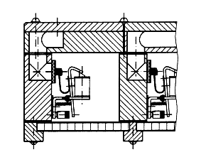

Elektrická hrací traktura je systém prvkù (spínaèù, vodièù, elektromagnetù), slouící k pøenosu pohybu klávesy v hracím stole na odpovídající pohyb ventilù ve vzdušnici nástroje. Na poèátku traktury je vdy spínaè (kontaktní èi bezkontaktní), spínanı pohybem klávesy èi pedálu. Konstrukcí tohoto spínaèe je nepøeberné mnoství, jeho funkce je ale vdy stejná – uzavøení elektrického obvodu. V uzavøeném obvodu zaène proudit elektrickı proud a ten, tøeba i na velkou vzdálenost na opaèném konci traktury zapùsobí na akèní èlen, napø. elektromagnet spøaenı s ventilem. Elektrickou hrací trakturu lze spojit se všemi pouívanımi typy vzdušnic. Následující animace ukazuje zásuvkovou vzdušnici ve spojení s elektrickım ovládáním tónového ventilu (neuvaujeme teï zpùsob ovládání registrace, ten mùe bıt øešen oddìlenì, rovnì i elektricky a je popsán v samostatné kapitole). |
Stisk klávesy uzavírá elektrickı obvod. Proud, tekoucí v pøívodech mezi hracím stolem a nástrojem pøedá tento øídicí impuls k akènímu èlenu ve vzdušnici. V tomto pøípadì je to páèkovı elektromagnet, spojenı táhlem s klapkovım tónovım ventilem. Sepnutí magnetu zpùsobí pohyb kotvy s pøipevnìnou páèkou a následnì odklopení klapky ventilu od otvoru ve ventilové komoøe. Stlaèenı vzduch z ní tak mùe proudit do tónové kancely a v pøípadì zapnutıch rejstøíkù (se zásuvkou odkrytımi otvory) dále do píšal. Všechny elektromagnety jsou zabudovány pøímo dovnitø ventilové komory, kadı tón (ventil) má svùj magnet, kterı je spojen s odpovídajícím øídicím spínaèem v hracím stole svım párem vodièù (dnes se pouívají i jiná øešení propojení – v hracím stole multiplexer, pøevádìjící stisky kláves na sériovı kód a pod vzdušnicí demultiplexer, pøevádìjící tento kód na øídicí signály pro magnety, propojení stùl – skøíò nástroje pak je moné øešit napø. optickım kabelem nebo bezdrátovì rádiovım signálem). |
Dalším èastım øešením, pouívanım u varhan s elektrickou
tónovou trakturou je spojení se vzdušnicí s rejstøíkovımi kancelami. Na
animaci jsou pouity pøímo elektromagnetické ventily (konstrukèní celek,
zahrnující magnet a ventil pøipevnìnı pøímo na jeho kotvì). Klávesa pohybuje
prostøednictvím el. proudu všemi ventily tého tónu ve vzdušnici (stejnì
jako u kuelkové vzdušnice s mechanickou èi pneumatickou trakturou klávesa
pohybovala všemi kuelkami tého tónu souèasnì, zde jsou místo kuelek
ventily na kotvách elektromagnetù): |
Pøestoe jsou klávesou otevøeny ventily všech hlasù tého tónu, zazní jen píšaly zapnutıch rejstøíkù tj. tìch, jejich rejstøíková kancela je naplnìna stlaèenım vzduchem pøes rejstøíkovı ventil (není na animaci zachycen). Toto uspoøádání vyaduje vìtší poèet magnetù, ne pøedchozí pøíklad (nejen kadı tón, ale také kadı hlas tého tónu má svùj magnet). Magnetù je tedy zjednodušenì tolik, kolik je píšal (neplatí pro smíšené hlasy, tam je jeden magnet pro celı sbor). |
|
 |
Kromì vıše popsaného uspoøádání (nákres v øezu vlevo)
je moné ještì obdobné øešení s boènì uzavírajícími elektromagnetickımi
ventily (pravı nákres). Rozmístìní a konstrukce ventilù jsou mírnì odlišné,
princip funkce je ale stejnı. |
Elektrická traktura je charakteristická nulovım zpodìním
odezvy na podnìt, vysokou rychlostí a precizní repeticí. Umoòuje pouít
i velmi vzdálenı hrací stùl bez zhoršení funkce pøenosu impulsu a bez
nutnosti pouití dalších mezirelé. Pøedevším u rejstøíkovıch vzdušnic,
kdy je zapotøebí velkı poèet magnetù (a tomu odpovídající vıkonnìjší napájecí
zdroj) je ale finanènì nároènìjší, ne ostatní typy traktur. Pro její
nepøíliš dobré hudební a umìlecké vlastnosti (chybìjící druckpunkt a sepjetí
hráèe s nástrojem, nemonost ovlivnìní zpùsobu otevøení ventilu ve vzdušnici
zpùsobem stisku klávesy atd.) se od ní souèasné varhanáøství èásteènì
odvrací a primárnì buduje mechanické a pneumatické nástroje (èi smíšené,
kde ji ale najdeme spíše a u druhého hracího stolu). Elektrickou trakturu
u novì budovanıch nástrojù tak volíme jen tam, kde by jiné øešení nebylo
moné (vzdálenı hrací stùl). |
Na souvisejících stránkách jsou popsány nejèastìji
pouívané komponenty elektrické
traktury, rejstøíková
traktura a elektrické
spojky. |
Poznámka: Tato stránka je souèástí Anatomie varhan ®, © Ing. Petr Bernat. Animace © Konrad Zacharski a Ing. Petr Bernat.